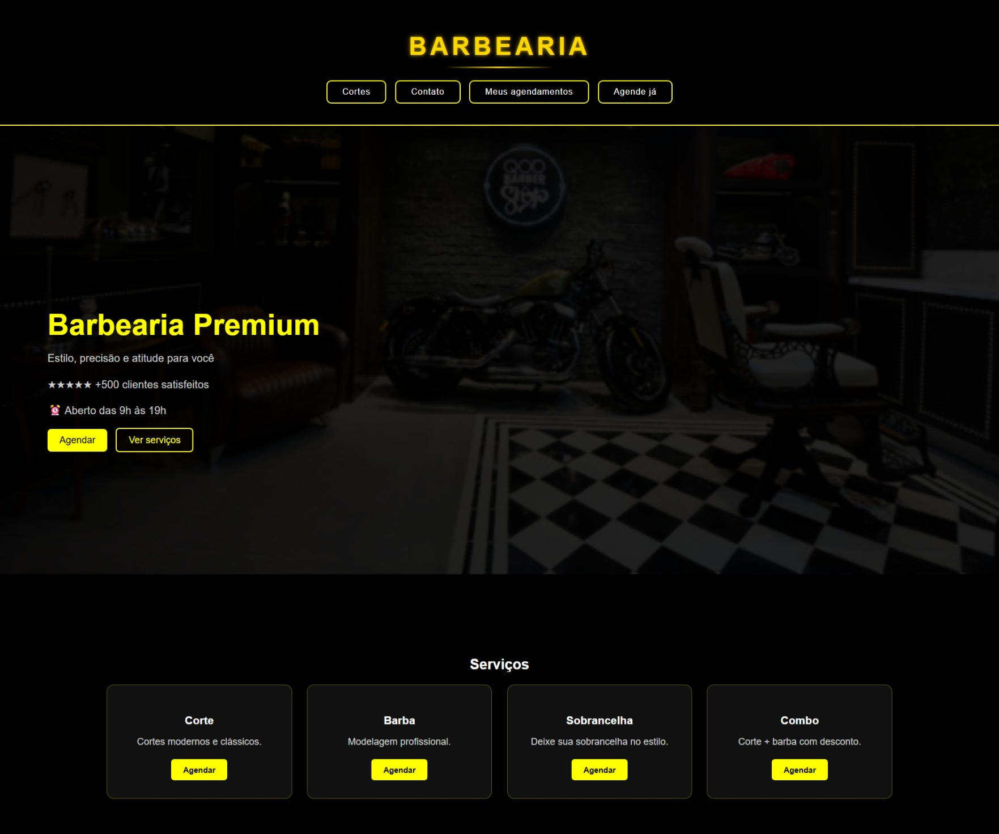
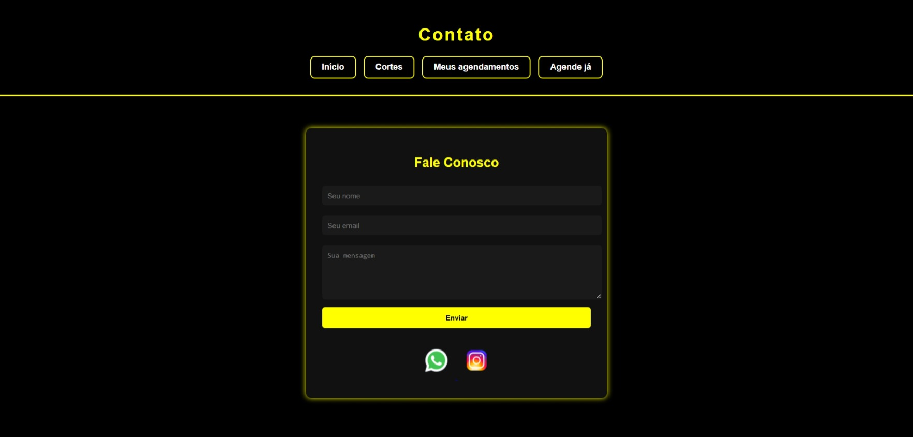
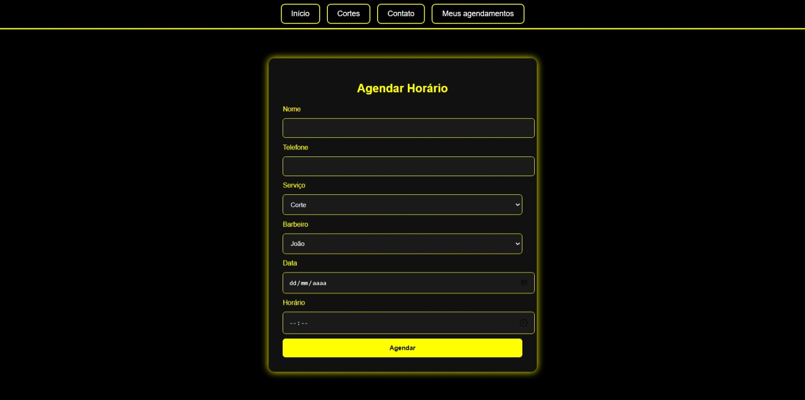

Sobre o projeto
O sistema permite que o cliente conheça os serviços oferecidos pela barbearia e realize agendamentos de forma organizada. O barbeiro possui um painel próprio para acompanhar os atendimentos e gerenciar os agendamentos.
Funcionalidades
- Sistema de agendamento: permite ao cliente informar nome, telefone, serviço, barbeiro, data e horário desejados.
- Controle de horários: os agendamentos são armazenados no banco de dados para ajudar a evitar conflitos.
- Painel do barbeiro: área administrativa para visualizar e acompanhar os agendamentos.
- Login do barbeiro: autenticação para restringir o acesso ao painel administrativo.
- Gerenciamento de agendamentos: permite acompanhar os atendimentos e alterar o status para “Finalizado”.
- Cadastro e armazenamento de informações: os dados dos clientes e dos agendamentos são registrados no banco de dados.
- Página de contato: formulário para facilitar a comunicação com a barbearia.
- Integração com WhatsApp: botão de contato direto para facilitar o atendimento.
- Interface responsiva: layout preparado para diferentes tamanhos de tela.
Tecnologias utilizadas
Imagens do projeto

.jpeg)




Objetivo do projeto
O projeto foi desenvolvido para aplicar conhecimentos de desenvolvimento web, integração entre front-end e back-end, criação e utilização de banco de dados, autenticação de usuários e gerenciamento de informações.
Além da parte visual, o sistema envolve a lógica necessária para conectar as páginas ao banco de dados e transformar o site em uma aplicação funcional de agendamento.